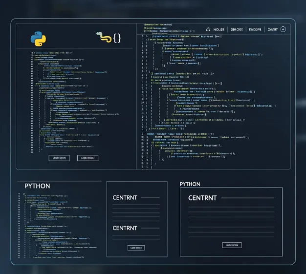

PROJECT CASE STUDY
画像解析ツール内製によるコスト削減
大規模な設備投資を回避。PythonとAIで従来の目視検査を自動化し、品質管理の手法を変えた技術的挑戦。
私の役割
開発リード
主要技術
Python (画像処理, 科学計算, GUI)
成果
大幅なコスト削減
プロジェクトの道のり
課題
従来の検査手法への依存と
高額な設備投資案
行動
AIと協業し「検査ロジック」を
コード化、ツールを内製
成果
設備投資回避と
品質基準の標準化
背景と直面した困難
Situation: 従来の検査手法への依存
製品の品質チェックは、経験豊富な作業員の目視に頼っていました。判定は個人の経験や体調に左右され、基準のばらつきが課題でした。検査時間も長く、生産性のボトルネックとなっていました。この状況を改善するため、会社は高額な試験機の導入を検討していました。
Difficulty: AIによる判定精度の課題
当初のアルゴリズムは、照明やノイズに影響を受けやすく、期待した精度が出ませんでした。「熟練作業員の目」の高度な判断能力を再認識し、チーム内では「やはり専用機が必要では」という意見も出ました。高額投資の回避と客観的な品質管理の両立が困難に思われました。
アイデアの核心：「検査ロジック」の単純化
複雑な目視検査を、誰でも再現可能な4つのシンプルなステップに分解しました。
1. 元画像
検査対象の画像
2. 領域取得
中心部分を自動で切り出し
3. 輝度データ化
2D画像を1Dの波形に変換
4. ピーク検出
波形の「山」の数をカウント
課題解決のプロセス
発想の転換：内製化という選択肢
「買う」のではなく「作る」。Pythonの豊富なライブラリを使えば、高額な専用機なしで画像解析は可能だと提案。画像処理と科学計算ライブラリをコア技術に選定し、低コストな開発計画を作成し、承認を得ました。
画像の前処理：AI判定精度向上の基礎固め
現場と協力し、複数条件の画像を収集。画像処理ライブラリでノイズ除去、コントラスト強調、二値化といった前処理を調整。さらに、感度調整を実装し、どんな環境でも解析対象を明確に切り分けられるようにし、解析精度の土台を固めました。
アルゴリズム開発：検査ロジックのコード化
プロジェクトの心臓部。2次元の画像データを1次元の輝度データ（波形）に変換し、ピーク検出アルゴリズムで波形の「山」と「谷」を自動カウント。熟練作業員の判定ロジックを、誰でも再現可能なアルゴリズムへ落とし込みました。
GUI開発と導入：現場で使えるツールへ
どんなに優れたアルゴリズムも、現場で使えなければ意味がありません。モダンなUIを簡単に作成できるGUIライブラリを採用し、PC操作に不慣れな作業員でも直感的に使えるシンプルなデスクトップアプリを開発しました。

プロジェクトがもたらした価値
設備投資の回避
大幅削減
高額な試験機を購入することなく、同等以上の品質管理体制を内製で実現。(金額詳細は非公開)
検査時間の大幅短縮
実現
目視による長時間検査から解放され、生産性が向上。
評価基準の標準化
判定基準の統一により品質が安定。属人化からの脱却に貢献。
学びと再現性
技術と現場の融合の重要性
AI技術の可能性と限界を同時に知れた事例だと思います。AIとの対話だけでは、現場の課題は解決できませんでした。現場の作業員の方々と協力し、彼らの知見をアルゴリズムに組み込むプロセスこそが、このプロジェクト成功の鍵だったと思います。高価なソリューションに飛びつく前に、手元の技術と現場の知恵を組み合わせることの重要性を学びました。
使用スキル
- Python (画像処理, 科学計算, GUIライブラリ)
- Generative AI (アイデア創出)
- 画像処理アルゴリズム
- GUIアプリケーション開発
再現ポイント
課題の再定義: 「高価な機械を買う」から「安価に内製する」へと、課題を捉え直す。
AIとの壁打ち: プログラミング経験が浅くても、AIと対話しながらアイデアを技術的な要件に落とし込む。
現場を巻き込む: 開発の初期段階から現場の担当者を巻き込み、フィードバックを得ながら改善を繰り返す。